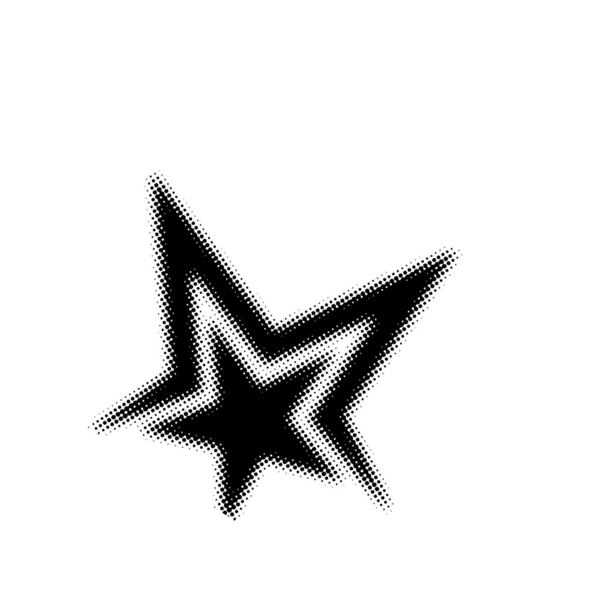
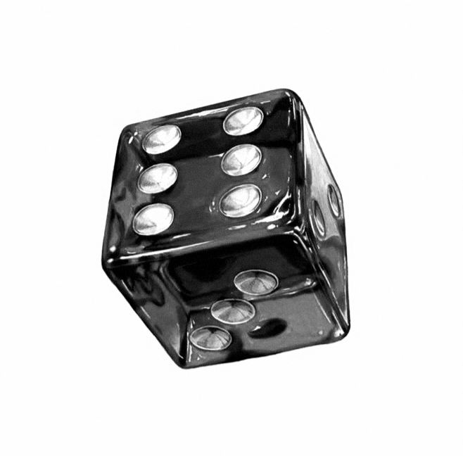
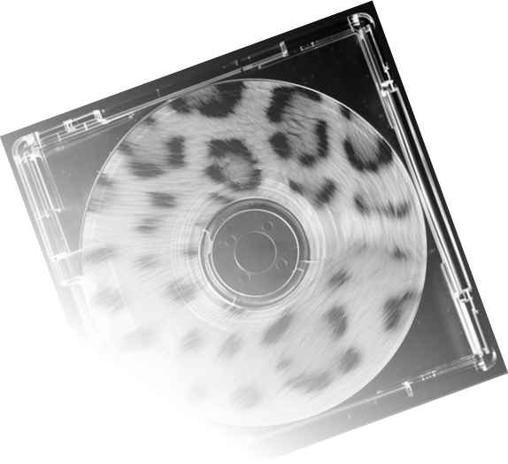

archive

01/09
↗


About me
hey, i'm crute. i run minecraft servers, break them, then fix them again — that's basically the whole hobby.
started out just wanting a server that didn't crash every other day, ended up knee deep in plugins, skript, and whatever else it took to make it work right. somewhere along the way i started writing discord bots too, mostly for my own servers, mostly because i kept wanting one more feature that didn't exist yet. these days it's a rotation of minecraft/tech projects, random coding rabbit holes, and way too much time spent doomscrolling in between builds. if it's a plugin, a bot, or some weird script idea at 1am, there's a decent chance i'm working on it.